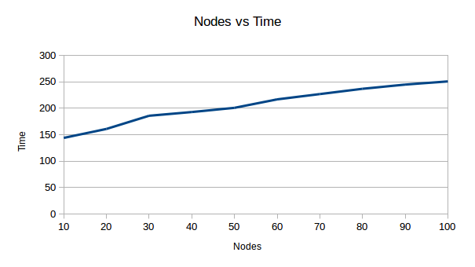

public class Shortest
extends java.lang.Object
Shortest figures out the shortest path through the graph generated, using Dijkstra's algorithm, and edits the .dot file to color the path. Below is a graph created after doing an amortized analysis of Dijkstra's algorithm.
public static void path(int s,
int t)
s - vertex you want to begin att - vertex you want to end up at